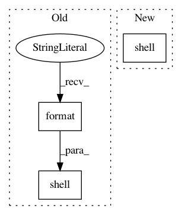

a0dedd65cf25a2eb3ae9d5cd1fb45e7b1fd8070c,qanta/pipeline/preprocess.py,WikipediaDumps,run,#WikipediaDumps#,53
Before Change
safe_path("data/external/wikipedia/parsed-wiki.tar.lz4")
if is_aws_authenticated():
s3_location = "s3://pinafore-us-west-2/public/wikipedia-dumps/parsed-wiki.tar.lz4"
shell("aws s3 cp {} data/external/wikipedia/parsed-wiki.tar.lz4".format(s3_location))
else:
https_location = "https://s3-us-west-2.amazonaws.com/pinafore-us-west-2/public/wikipedia-dumps/parsed" \
"-wiki.tar.lz4 "
shell("wget -O {} {}".format("data/external/wikipedia/parsed-wiki.tar.lz4", https_location))
After Change
archive = safe_path("data/external/wikipedia/parsed-wiki.tar.lz4")
if is_aws_authenticated():
s3_location = f"s3://pinafore-us-west-2/public/parsed-wiki.tar.lz4"
shell(f"aws s3 cp {s3_location} {archive}")
else:
https_location = "https://s3-us-west-2.amazonaws.com/pinafore-us-west-2/public/parsed-wiki.tar.lz4"
shell(f"wget -O {archive} {https_location}")
In pattern: SUPERPATTERN
Frequency: 3
Non-data size: 3
Instances
Project Name: Pinafore/qb
Commit Name: a0dedd65cf25a2eb3ae9d5cd1fb45e7b1fd8070c
Time: 2018-05-07
Author: ski.rodriguez@gmail.com
File Name: qanta/pipeline/preprocess.py
Class Name: WikipediaDumps
Method Name: run
Project Name: Pinafore/qb
Commit Name: 9d50126a19a11d0fa31359b4a489af9ef567e8be
Time: 2016-11-30
Author: ski.rodriguez@gmail.com
File Name: qanta/pipeline/__init__.py
Class Name: Reports
Method Name: run
Project Name: Pinafore/qb
Commit Name: f617c357258a6c7f403a5c044355782c7077fc52
Time: 2018-04-06
Author: ski.rodriguez@gmail.com
File Name: qanta/guesser/vw.py
Class Name: VWGuesser
Method Name: train